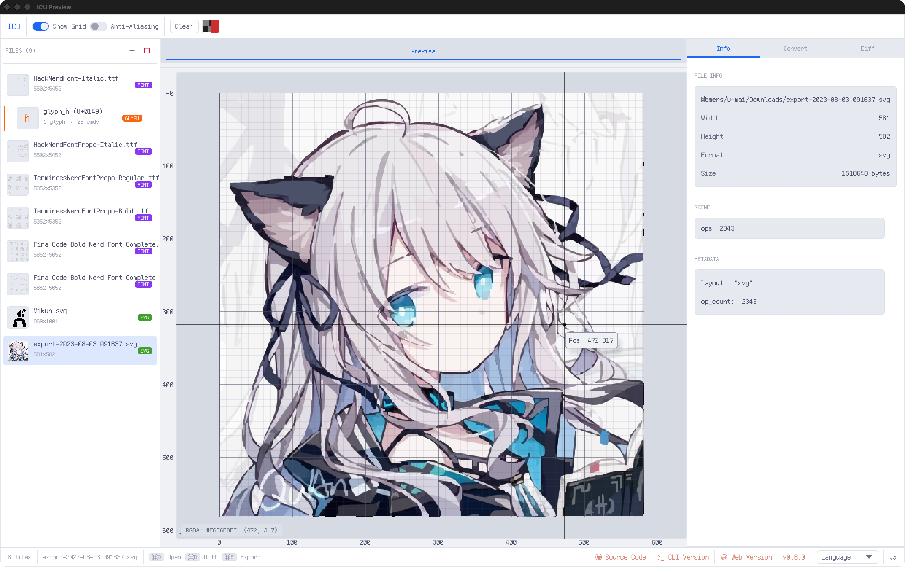

icu_tool
Install v0.10.0
ICU
Image Converter Ultra
A Rust toolkit for inspecting, previewing, and converting images and fonts.


Installation · CLI · Viewer · Library

Image Converter Ultra (ICU) provides a native command-line interface, an egui desktop viewer, a WebAssembly viewer, and the reusable icu_lib crate.
Features
- Decode, inspect, preview, and convert common raster image formats.
- Read and write LVGL v8/v9 image data with configurable color format, stride, dithering, and compression.
- Read and write MIRX flat images and inspect MIRX vector, indexed-image, and font chunks.
- Import and export SVG scene data.
- Inspect TTF, OTF, and TTC fonts and individual glyph outlines; WOFF and WOFF2 signatures are recognized for format detection.
- Bake TTF/OTF glyphs into MIRX SDF or grayscale font atlases.
- Merge multiple MIRX font files into one bundle.
- Compare images and glyphs in the desktop and web viewer.
- Generate shell completion scripts for Bash, Zsh, Fish, Elvish, and PowerShell.
Installation
Homebrew
brew install W-Mai/homebrew-cellar/icu_tool
Alternatively, add the tap first:
brew tap W-Mai/homebrew-cellar brew install icu_tool
Shell installer
curl --proto '=https' --tlsv1.2 -LsSf \ https://github.com/W-Mai/icu/releases/latest/download/icu_tool-installer.sh | sh
PowerShell installer
powershell -c "irm https://github.com/W-Mai/icu/releases/latest/download/icu_tool-installer.ps1 | iex"
Windows MSI
Download the latest MSI installer from the releases page.
Cargo
cargo install icu_tool
The installed executable is named icu.
Command-line interface
Run icu --help or icu <command> --help for the complete, version-specific option list.
| Command | Purpose |
|---|---|
icu info <FILE> |
Print detected file metadata as YAML. |
icu show [FILES]... |
Open the native viewer. With no files, it opens an empty viewer. |
icu convert <INPUTS>... -F <FORMAT> |
Convert files or a directory to another format. |
icu bake-font <TTF> |
Bake a TTF/OTF font into a MIRX SDF or grayscale atlas. |
icu merge-fonts <INPUTS>... -O <OUTPUT> |
Merge MIRX font files into one multi-font bundle. |
Increase log verbosity with -v, -vv, or -vvv before the subcommand.
Inspect and preview
ICU auto-detects supported input formats by default.
icu info res/img_0.png icu show res/img_0.png res/img_0.bin
Use --input-format common or --input-format lvgl-v9 only when automatic detection is not appropriate.
Convert images
Convert one or more files:
icu convert res/img_0.png res/img_0.jpeg -F webp
Convert a directory recursively while preserving its relative directory structure:
icu convert res -O output -F jpeg -r
Important conversion options include:
-F, --output-format:png,apng,jpeg,bmp,gif,tiff,webp,ico,pbm,pgm,ppm,pam,lvgl, ormirx.-O, --output-folder: write output under a different directory.-r, --override-output: replace existing output files.-C, --output-color-format: select an LVGL or MIRX pixel format.-S, --output-stride-align: align output rows; the default is1.--dither: set indexed-color quantization from1to30.--output-compressed-method: selectnone,rle, or LVGL v9 raw-blocklz4compression.--lvgl-version: select LVGLv8orv9; the default isv9.--png-mode: selectrgba,rgb,preserve,indexed1,indexed2,indexed4, orindexed8; the default isrgba.--png-compression: selectfast,balanced, orbest; the default isbalanced.--quality: set JPEG quality from1to100; the default is85.--background: set the JPEG alpha-flattening color as#RRGGBB; the default is white.--stdout: write one converted result to standard output.
LVGL output requires an explicit color format:
icu convert res/img_0.png -O output -F lvgl -C i8 --lvgl-version v9
Compress an LVGL v9 image with the raw-block LZ4 format used by LVGL:
icu convert res/img_0.png -O output -F lvgl -C i8 \ --lvgl-version v9 --output-compressed-method lz4
LZ4 compression is available for LVGL v9. The payload uses an LVGL 12-byte compression header followed by a raw LZ4 block; LZ4 frame files are not used. ICU also decodes LVGL v9 LZ4 images produced by LVGL's image tooling.
MIRX flat-image output accepts rgb565, rgb565-swapped, rgb888, rgba8888, bgra8888, and xrgb8888 pixel formats:
icu convert res/img_0.png -O output -F mirx -C rgba8888
The Viewer imports animated WebP and exports multi-frame sources or workspace groups as lossless animated WebP. The same pure-Rust path is used on native and WebAssembly builds. CLI convert continues to process WebP inputs independently as static files.
--output-category c-array is reserved by the CLI but is not implemented.
Bake and merge fonts
Bake an SDF atlas from an inline character set:
icu bake-font path/to/font.ttf \ --charset "Hello 世界" \ --size 32 \ --bit-depth 4 \ --format sdf \ -O output
Use --charset-file <FILE> to read the character set from a UTF-8 text file. SDF atlases accept bit depths 4 and 8; grayscale atlases accept 1, 2, 4, and 8.
Merge multiple baked font files:
icu merge-fonts output/latin_sdf_32.mirx output/cjk_sdf_32.mirx \ -O output/fonts.mirx
Shell completion
Add the matching command to the shell startup file.
# Bash source <(icu -I bash) # Zsh eval "$(icu -I zsh)" # Fish icu -I fish | source
PowerShell and Elvish are also supported; run icu -I <shell> to emit the completion script.
Viewer
The viewer is implemented with egui/eframe and runs as a native application or in a browser. It supports drag-and-drop and file selection, raster and animated-image preview, image diffing, MIRX scene inspection, indexed-image inspection, font atlas and glyph-grid views, glyph outline inspection, and font comparison.
Open the native viewer with:
icu show
The WebAssembly build starts the same viewer without the native CLI layer.
Viewer export uses two explicit actions:
Convertexports the selected logical source to one file. Native builds show an editable save-file dialog; WebAssembly starts one browser download.Convert Allexpands selected entries, Groups, and animation frames. Native builds write into a selected output directory; WebAssembly downloads one ZIP archive while preserving relative paths.
Native file and folder inputs are recursively enumerated in stable path order. WebAssembly supports multi-file and directory selection, preserves browser-provided relative paths, and recursively reads dropped directories when the browser exposes a directory-entry or file-system-handle API. APNG output is available only for multi-frame sources; a static source is rejected instead of producing a still PNG with an .apng suffix.
Build from source
The repository pins its Rust toolchain in rust-toolchain.toml.
git clone https://github.com/W-Mai/icu.git cd icu cargo build --release
The native executable is written to target/release/icu on Unix-like systems or target/release/icu.exe on Windows.
WebAssembly
Install the target and Trunk, then build the web application:
rustup target add wasm32-unknown-unknown cargo install trunk trunk build --release
Use trunk serve for local development.
Library
Add the reusable library crate with:
cargo add icu_lib
The library converts external formats through the shared MiData model:
input bytes -> EnDecoder::decode -> MiData -> EnDecoder::encode -> output bytes
MiData represents RGBA images, grayscale images, vector scenes, fonts, and indexed images. Format-specific implementations live under icu_lib/src/endecoder, while icu_lib/src/midata defines the intermediate model. See icu_lib/README.md for a library example.
Repository layout
src/ Native CLI and egui/eframe viewer icu_lib/ Reusable encoders, decoders, and intermediate data locales/ English and Simplified Chinese UI translations assets/ Fonts and web assets res/ Sample conversion inputs .github/workflows/ Release, website, and WebAssembly automation
Development conventions and the required quality gate are documented in CONTRIBUTING.md.
License
ICU is available under the MIT License.